LETTER BOX
MARCH
| MON | TUE | WED | THU | FRI | SAT | SUN |
|---|---|---|---|---|---|---|
|
Welcome to milin's letter box
You found the letter box!
From tomorrow one letter will be delivered every morning to this letter box before you wake up. I am happy for your visit everyday. |
Letter #1
Ngày đầu tiên đi làm mà hong có ai nhắn tin làm phiền trước khi
đi làm hết..
Chưa bao giờ anh đi làm mà cảm giác trống rỗng tới z. Anh nhớ những ngày tranh thủ những phút cuối cùng trước khi vô làm để nhắn tin với em, chúc em ngủ ngon, những ngày ngồi ở nhà tới sát giờ đi làm mới chịu đi (xong lúc nào cũng mém trễ hết). Trời chắc nó là niềm an ủi duy nhất của anh mỗi khi anh đi làm luôn đó. Dưới đây là tấm hình anh chụp hôm anh đợi em tan làm nè. Dù chỉ có dịp đưa đón em đi làm được một lần lúc còn ở VN thôi nhưng mà nhiêu đó cũng đủ để anh muốn là từ nay về sau có thể là người đưa đón em đi làm về hằng ngày rùi. Anh vẫn còn nhớ khoảnh khắc em sà vào người anh cảm giác nó bình yên lắm, chỉ muốn nó như vậy mãi thuii. Bị nhớ cảm giác đưa em đi làm xong đón em về rùi, cho quay lại lúc đó được hong 🥹🥹. 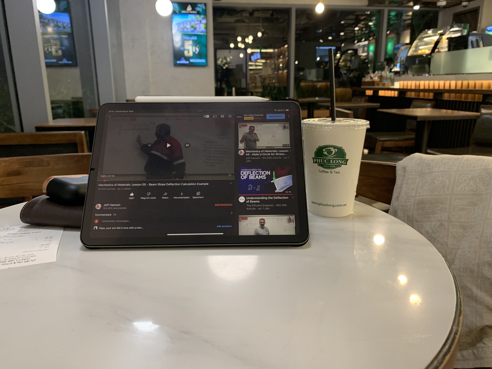 |
Letter #2
If there are two things on this Earth that can make me feel
immediately
loved, it would be your "chao bui sang" and "ngu ngon ngak". Oh,
and that as
well.
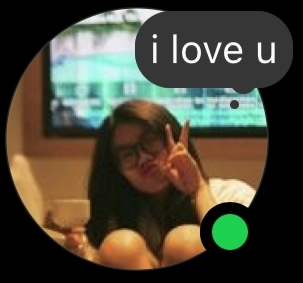
|
Letter #3
Too many thoughts today.. I think I really need to speak it out.
|
|||
|
Letter #4
For the last week I have been living in the fear of what if one
day I lose you in this world.. What if one
day you slip out of my hand? And honestly it cannot be worse.
That is why I
craved for your attention so much and I gave
you so much love, because I am afraid that if I don't give my
best to love
you then I'll lose you. And indeed I was
expecting something in return. But I realize that doing so only
make you
feel more under pressure, because you are not
mentally capable at the time to requite all those love. So I
think what I'll
do right now is I will still love you with
all my heart, regardless, but I won't expect anything else. I
just want
you to know that I love you because that's
what I want to do, and I feel happy when doing it. That's how I
used to love
you right? Just loving you and be grateful for
everything.
From now on, no more expectation, only loving you with this heart. |
Letter #5
Thiệc lạ là có mong muốn ngẫu hứng của một người mà anh có thể
nghiêm
túc với nó như vậy đó.
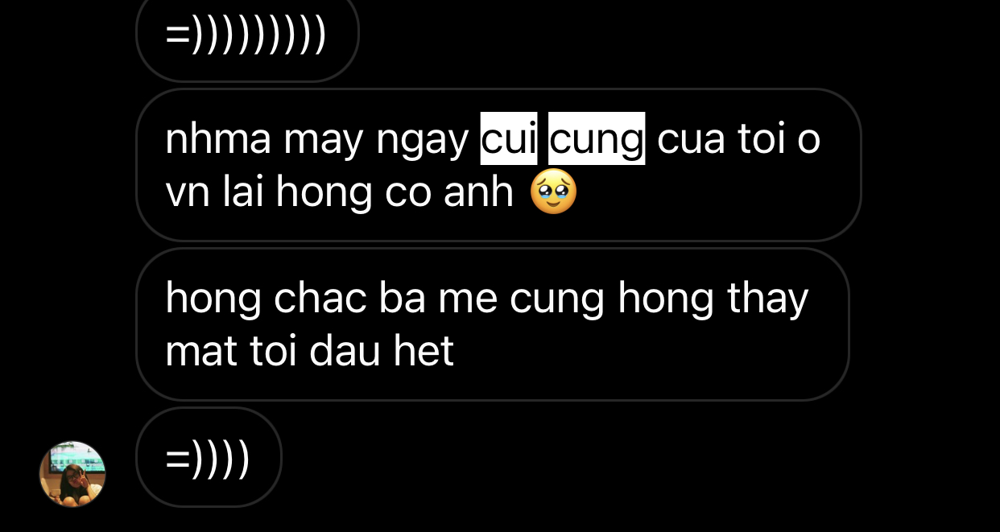
|
Letter #6
🙆🏻♀️: Anh gan hơn em nghĩ nhiều đók.
🧠: Tất nhiên rồi không gan sao mà iu em cho được 😌. |
Letter #7
🙆🏻♀️: Anh mà bỏ em theo nhỏ cùng phòng thì em nghĩ cũng tới
lúc em đổi
bạn trai rồi đó.
🧠: Ngốk. No one on this Earth is worth the cost of you het. |
Letter #8
In my world, you are my princess, my lifelong treasure of
destiny
(Lebenslangeschicksalschatz).
|
||
|
Letter #9
"If, for example, you come at four o’clock in the afternoon,
then at
three o’clock I shall begin to feel happy. As the
time passes I shall feel happier and happier. At four
o’clock, I shall
become agitated and start worrying; I shall
discover the price of happiness!"
- The Little Prince, Antoine de Saint-Exupéry |
Song that reminds me about you #1
"I don't care how long it takes
As long as I'm with you, I've got a smile on my face" - Here With Me, d4vd |
Letter #10
Just a random thought but since the day I'm your boyfriend, I
just want to become
the best version of myself, to display that
version to your parents and tell your parents that "your
daughter have
chosen the right person" and also, to make you super
proud whenever you tell anyone about me.
À đúng rồi, tôi cần phải có bản lĩnh kiếm tiền để em còn tiêu tiền của tôi nữa chứ. |
Letter #11
Dạo này anh nhận ra một điều là từ lúc anh yêu em đôi mắt
này chỉ
còn nhìn thấy mỗi mình em thôi. Nói không ngoa đâu nhưng mà từ
giây phút đó những người con gái khác trong
mắt
anh đều trở nên nhạt nhẽo và vô vị đó.
|
APRIL
| MON | TUE | WED | THU | FRI | SAT | SUN |
|---|---|---|---|---|---|---|
|
Letter #12
Hé, dạo này ngồi coi lại bộ anime "You lie in april" có một khúc
phim nữ chính liệt kê những thứ mà nam chính thích, nhưng mà nữ
chính đã phải rời xa nam chính trong khi có quá nhiều điều nữ
chính
chưa biết về nam chính. Xong anh
cũng pause lại và ngồi liệt kê thử những fact về em để coi anh
hiểu em tới đâu. Và surprisingly là anh liệt kê được cũng khá là
nhiều đó. Vậy nên là từ giờ mỗi bức thư sẽ có thêm một section
"Fact about milin" bắt đầu từ hôm nay nèk. Anh tự tin là trong
90 ngày sắp tới mỗi ngày anh sẽ nghĩ ra được một fact về em đó,
vậy là tới ngày tụi mình gặp lại nhau là anh sẽ viết được 90 cái
fact rùi.
------------------------------------------------------------------------- Fact about milin #1: Em có 2 vết sẹo ở trên mặt: 1 ở trên trán và một ở môi. Vết sẹo trên trán là do một lần chơi trong xóm bị đập đầu vào cục đá, xong rồi lúc đó còn chạy về nói với mẹ lấy băng keo dán cầm máu. Kết quả là vô bệnh viện khâu mấy mũi liền luôn. Vết sẹo ở môi là một lần em chơi dích bài, ngồi trên ghế đá nhma ngồi sao đó bị lộn nhào về sau xong cũng phải khâu thêm mấy mũi luôn. |
Letter #13
Hôm nay cúp call xong tự nhiên tâm trạng anh thấy zui. Chắc tại
vì cũng lâu rùi tụi mình mới có một buổi call chất lượng như
z.
Em biết hong, NB chính là minh chứng cho lá thư #11 mà anh đã viết đó. Trước lúc gặp em, anh cũng đã suy nghĩ chuyện này rồi, rằng là nếu một lúc nào đó NB có thích anh và cua anh thì có khả năng anh cũng sẽ bị mềm lòng đó. Nhưng mà rồi em xuất hiện. Em trở thành sự ưu tiên của anh. Từ lúc đó trở đi đôi mắt này không còn nhìn lọt một ai khác được nữa hết. Khoảng thời gian còn lại ở VN anh đã là một người bạn trai tồi, đã nhiều lần làm em phải phiền lòng. Những cảm xúc tiêu cực của em, anh sẽ tiếp nhận và thấu hiểu nó. Deep down I always want you to feel safe whenever you are with me, so I will do everything to achieve it. Now that I know how I should keep distance and have barriers with EVERY other girls, I promise I won't ever make you feel unsafe or unhappy about this topic again, babe. ------------------------------------------------------------------------- Fact about milin #2: Em ăn món chính cần phải có tráng miệng. Preferably ice-cream. Em ăn vặt cũng nhiều. Nếu một ngày tụi mình về chung nhà, anh sẽ đảm bảo trong tủ lạnh không bao giờ thiếu Hagen Dazz và trong phòng không bao giờ thiếu Chips cả. |
|||||
|
Letter #14
Lá thư hôm nay gửi tới chỉ muốn chúc bé một tuần mới mọi thứ
diễn ra thuận lợi thui. Tuần này sẽ là một tuần mệt mỏi zới em,
nhma anh tin là u will pass all the tests and deadlines with
flying colors. That's my babii.
------------------------------------------------------------------------- Fact about milin #3: Em thích ăn đồ ngọt nhưng mà không được quá ngọt, because your sugar tolerance is quite low. |
Song that reminds me about you #2
"We are still kids, but we're so in love
Fighting against all odds I know we'll be alright this time." - Perfect, Ed Sheeran ------------------------------------------------------------------------- Fact about milin #4: Em thích cutlery của Chisai Kitchen, muốn đi Chisai nhma chưa bao giờ được dẫn đi hết. |
Anniversary #2 months 🎉🎉
(Bức thư này có nhạc)
------------------------------------------------------------------------- Biếc gì hong, một điều trong to-do list anh muốn làm cho em đó là đàn kalimba cho em nghe mỗi tối trước khi em đi ngủ đó. Tiếng đàn nhẹ nhàng mà có em ngồi kế bên nữa thì còn gì bình yên hơn. Hôm nay là anni 2 tháng của tụi mình nè, thấy 2 tháng zì mà lâu quá trời lâu luôn 😾. Đối với anh thì cột mốc anni nửa năm với một năm quan trọng hơn nhiều, nhưng mà anh vẫn muốn làm cái gì đó nho nhỏ để celebrate cột mốc này của tụi mình, dù gì cũng là 2 tháng khó khăn mà. Có ai vừa iu nhau được 1 tuần mà đã phải xa như tụi mình rồi hok! For our 2 months anniversary I have chosen the song "Perfect" by Ed Sheeran. As the name implies, you are the perfect missing piece in my life. I don't care if anyone is prettier or more talented than you, it's always you that I gravitate towards. You have my priority. You have my unfair bias. You are, per the title of the song, perfect. Lastly, something to say for our future selves: I don't know how the future is going to treat us, but as long as you don't let go of me first, I'm ready to fight against all odds to keep you by my side. (I hope you enjoy listening to this) ------------------------------------------------------------------------- Fact about milin #5: Em thích anh. A lot. |
Letter #15
Hôm nay anh lại mắc đúng lỗi mà lần trước vì nó mà tụi mình cãi
nhau luôn..
Là anh đã expect quá nhìu. And expectation kills joy. Lẽ ra hôm nay đã là một ngày tụi mình vui vẻ call nhau rùi. Anh biết là hnay em mệt, mệt lắm chứ, nhưng mà em vẫn dành thời gian call với anh. I can feel the love and effort you put into me. Nhưng mà lúc anh cảm thấy mình được em yêu thương lại, anh lại tự vô thức cho mình cái quyền được đòi hỏi nhiều hơn từ em. Anh đòi hỏi em phải toàn tâm toàn ý với anh mỗi lần call. Và hôm nay sự kì vọng đó lại một lần nữa đẩy em ra xa anh. Xin lỗi ngak, là anh vẫn đang học cách để yêu em bằng tất cả sự dịu dàng và trân trọng của anh, vậy mà hôm nay đã để em thấy dáng vẻ xấu xí ích kỉ của anh rùi. Hi vọng là mỗi ngày anh vẫn sẽ cảm thấy được em yêu thương, và lần này anh sẽ đón nhận nó đúng cách mà em trao đi, sẽ không đòi hỏi zì nữa hết. ------------------------------------------------------------------------- Fact about milin #6: Đồ uống yêu thích của em là cà phê. Em cần cà phê mỗi ngày để não có thể hoạt động bình thường. Thiếu cà phê em sẽ bùn ngủ nguyên ngày lun. |
Letter #16
Không hiểu sao nhưng mà khi anh càng yêu bản thân mình thì anh
lại càng yêu em hơn đó. Mỗi lần đứng trước gương anh sẽ tự thấy
bản thân mình đẹp xong rùi sẽ nghĩ là woa, sao mình lại có thể
xứng với em như z. Vậy nên là, không có chuyện anh bớt iu em để
iu bản thân mình hơn được đâu, nó là điều k thể lun ák.
Nhưng mà thui, z cũng tốt, tự nhiên iu một lúc được 2 người lun kk, hời quá hời. ------------------------------------------------------------------------- Fact about milin #7: Em không vẽ được (Like me). Vẽ là môn học đáng ghét nhất của em. |
Letter #17
Even when I'm drunk, I cannot stop thinking abt u.
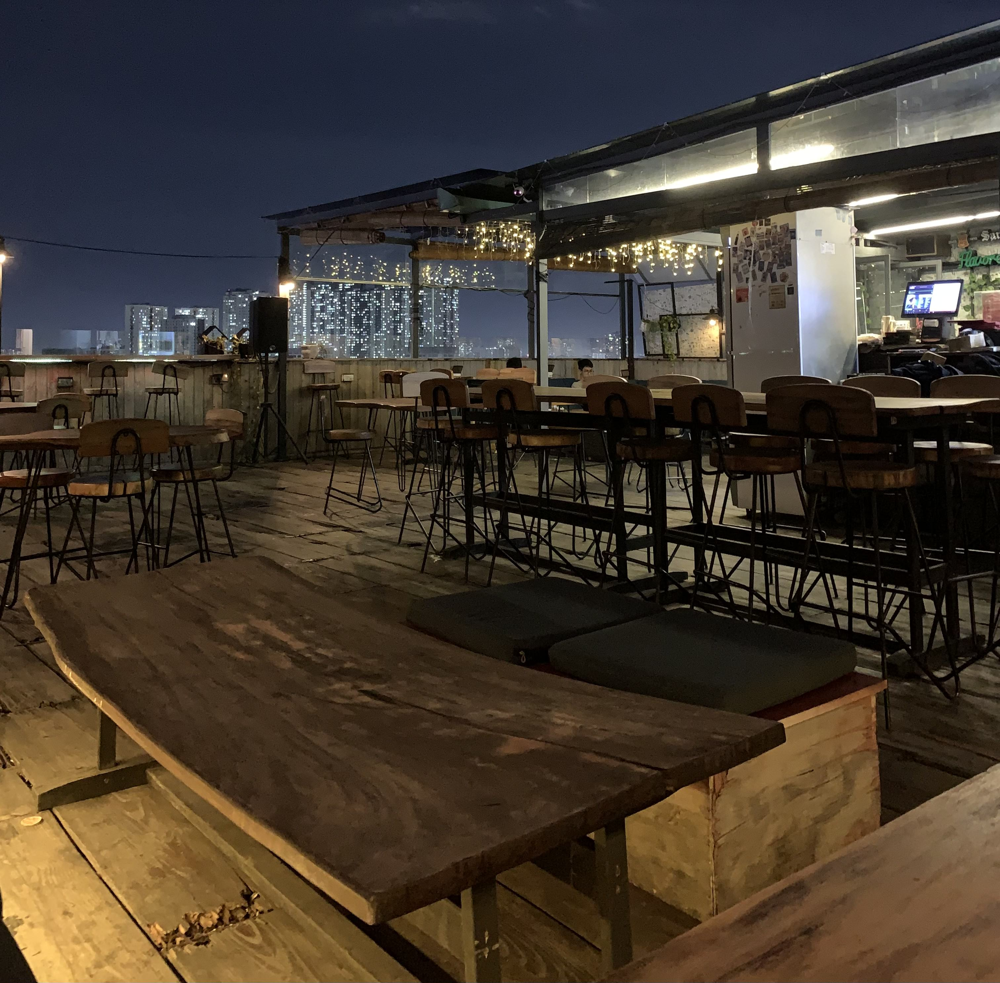
------------------------------------------------------------------------- Fact about milin #8: Em thích tất cả những thứ unhealthy trên đời này, trừ thuốc lá ra. Em còn thích nhậu nữa. |
Letter #18
In every possible future, I just want to have you in it. Every
single one of them.
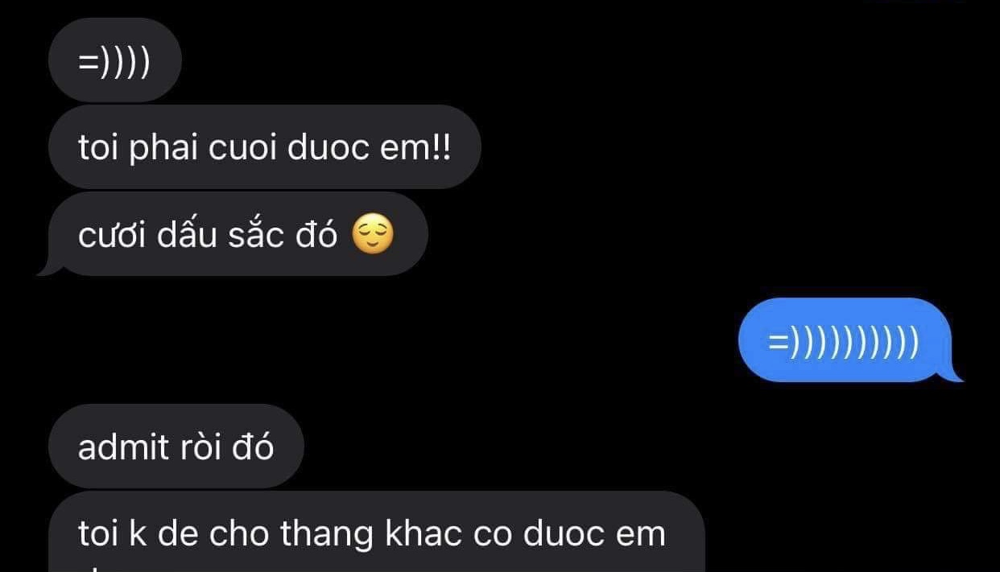
------------------------------------------------------------------------- Fact about milin #9: Em thích kem, gelato. Vị kem yêu thích của em là salted caramel . Vị gelato yêu thích của em là matcha. In fact, matcha ở snowee là thứ đã đưa em vào đạo matcha. (thiệc ra bây giờ em đã có vị kem yêu thích mới nhưng mà vị đó chỉ exclusive ở úc và tới bây giờ anh vẫn không nhớ được tên của nó. Nhưng mà nếu đi mua cho em thì anh sẽ nhận ra vị đó đó) |
|
Letter #19
Anh muon la nguoi duoc yeu thuong em den het cuoc doi
nay, nhung ma het cuoc doi nghe xa voi qua nhi. Vay thi moi
ngay anh se yeu thuong em y nhu ngay dau tien tui minh gap nhau
z.
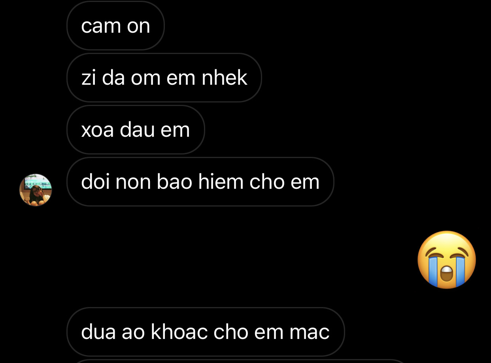
------------------------------------------------------------------------- Fact about milin #10: Em uống trà sữa truyền thống. 30 đường 50 đá. Trân châu đen. Của Gong Cha. |
Letter #20
Trong tất cả những thằng yêu em, anh là thằng học giỏi nhất
😌.
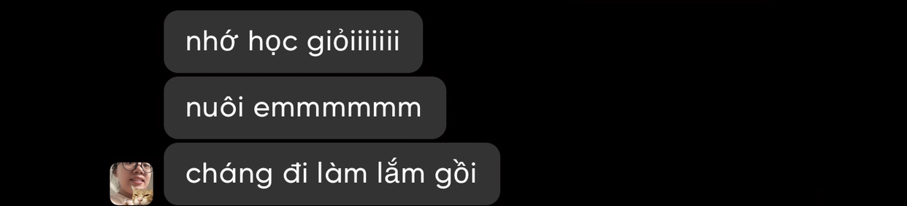
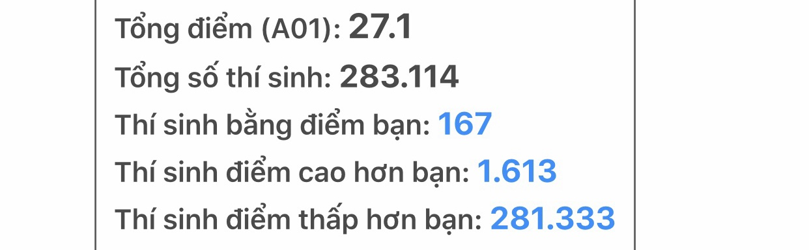 ------------------------------------------------------------------------- Fact about milin #11: Em ăng phở hong bỏ rau mùi. Nhưng mà hồi nhỏ đi zới ba mẹ tô phở zừa ra là ba em đã cầm sẵn một nắm rau bỏ vô tô em rùi. Nhưng mà cuối cùng thì em cũng k ăng hết đống rau đó mà sẽ giấu nó đi. Em ăng chén tiết canh sẽ húp lun lòng đỏ trứng chứ hong quậy lên. |
Letter #21
Hong hiểu sao dạo này anh lại nhớ em vãi cứt.
Anh cũng không muốn nhớ em nhìu tới z đâu, tại vì nhớ em là sẽ muốn làm phiền em, nhưng mà trong ngày em sẽ không thể nào rep tn của anh nhanh được. Nhưng mà hong làm phiền em thì lúc nào cũng sẽ có một thế lực nào đó lôi kéo anh cầm đt lên nhắn tin với em. Either way thì cái nào cũng sẽ dẫn tới việc down mood thui. Hồi trước anh đã từng nói là sẽ hong nhắn tin làm phiền em nữa đó, mỗi ngày chỉ call nhau 1 tiếng thôi là đủ, nhưng mà anh nhận ra điều đó là không thể, tại vì lúc nào anh cũng tò mò là em đang làm zì đó hết. Sẽ luôn có một thế lực thân bí nào đó sai khiến anh cầm đt lên và nhắn cho em. Còn em, dạo này em có nhớ anh hong? Lâu rùi anh chưa được nghe hai chữ "nhớ anh" từ em đó. 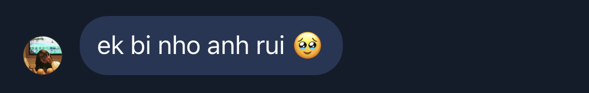 ------------------------------------------------------------------------- Fact about milin #12: Em thích ăn rau luộc với kho quẹt. Legend has it that món kho quẹt em làm siu ngon (Mún thử). |
Letter #22
Giay phut em sà vao nguoi toi, toi biet minh da bi em danh dau
den het doi roi.
Chua bao gio anh om ai ma cam giac no lai binh yen nhu z het.
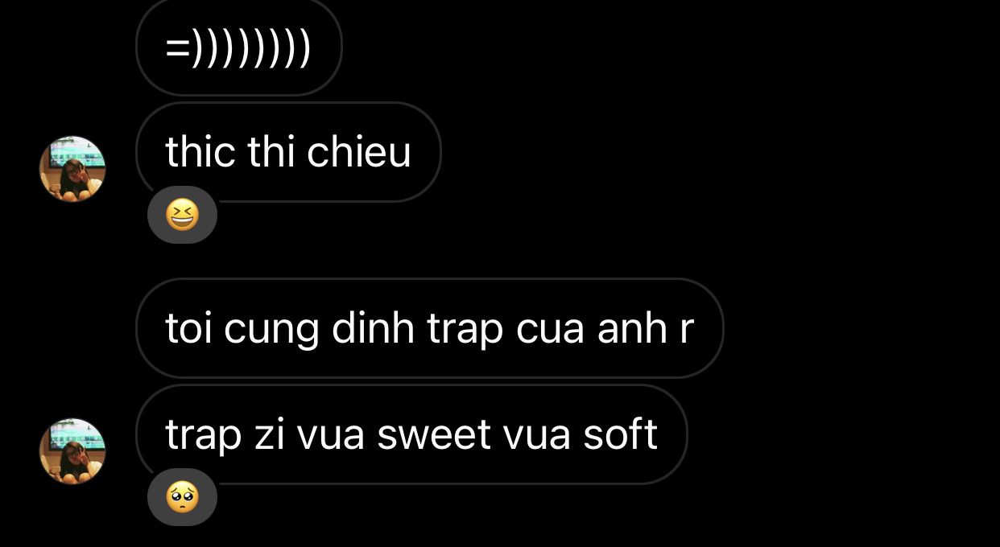
------------------------------------------------------------------------- Fact about milin #13: Em từng là một game thủ chính hiệu. Từng phá đảo 1 trò trong nitendo của a2 em tận 2 lần lận. Lần nào chơi game với cduy mduy em cũng thắng tụi nó hết. |
Song that reminds me about you #3
"Rồi ta sẽ ngắm pháo hoa cùng nhau, trên tầng thượng phía bên
kia dòng sông."
- Rồi ta sẽ ngắm pháo hoa cùng nhau, O.lew ------------------------------------------------------------------------- Biếc zì hong, trong wish list những việc anh muốn làm với em có một dòng ghi là "Được ngắm pháo hoa chung với em vào năm mới" đó. Trong suy nghĩ của anh, nó sẽ là một khung cảnh bình yên, có tiếng pháo hoa nổ, có mùi tóc và hơi ấm từ đôi bàn tay của em. Hai đứa đứng trên tầng thượng của một tòa nhà ở quận 2 và cùng nhìn về một hướng, không ai nói gì cả, nhưng mà tụi mình đều biết sẽ hi vọng và cầu nguyện cho chuyện gì ở tương lai. Năm nay anh ngắm pháo bông một mình, và giữa giây phút pháo bông rợp trời anh đã thật sự cầu nguyện cho tụi mình và ước rằng năm sau mình có thể được đứng cùng em ngắm nhìn khung cảnh này đó. ------------------------------------------------------------------------- Fact about milin #14: Kẻ thù số 1 của em là ớt chuông. Kẻ thù số 2 của em là dưa leo xào. Kẻ thù số 3 của em là cần tây. Ngoài ra còn có vanilla, rau má, chocomint và còn nhiều lắm. |
Letter #23
I fuckin miss your hair scent rn.
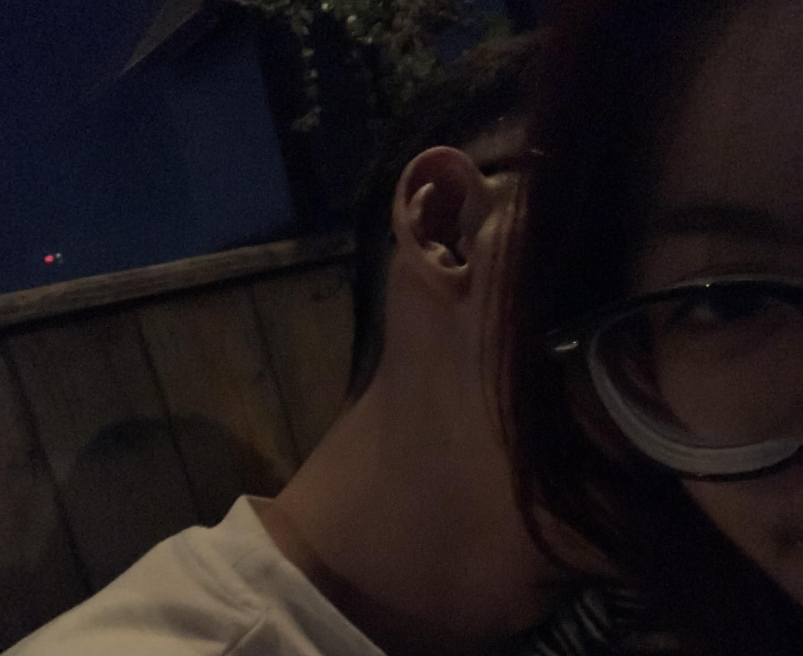
------------------------------------------------------------------------- Fact about milin #15: Mùi tóc của em là cái mùi thơm nhất trên đời này, and it makes me feels like home in an instance. |
Letter #24
Yesterday, when I was on a solo trip to Cologne. I discovered a healing-to-the-soul corner.
Of course, it was not lowkey whatsoever, but it has this slow and chilling vibe that I think you will like. There was a coffee shop with the view
to the river as well. I stood there for quite a while and wait for the sunset. The moment the sunset hit and
I walked through this coffee shop, I was amazed by how surreal this scene was and a question
popped up in my head "How does it feels like when I get to share this moment with you? I want to take you to that coffee shop and
we will watch this sunset together".
I tried imagine sharing this moment with many people in my life, but none excited me. Only when it's you that my mind immediately sparkled with
joy and desire. That moment, when I realise that every beautiful moment in my life, I just want to share it with you, is when
I know how hard I have fallen for you. You appear in every corner of my life, even when you and I have never gone to that place. How unfair that is 😾.
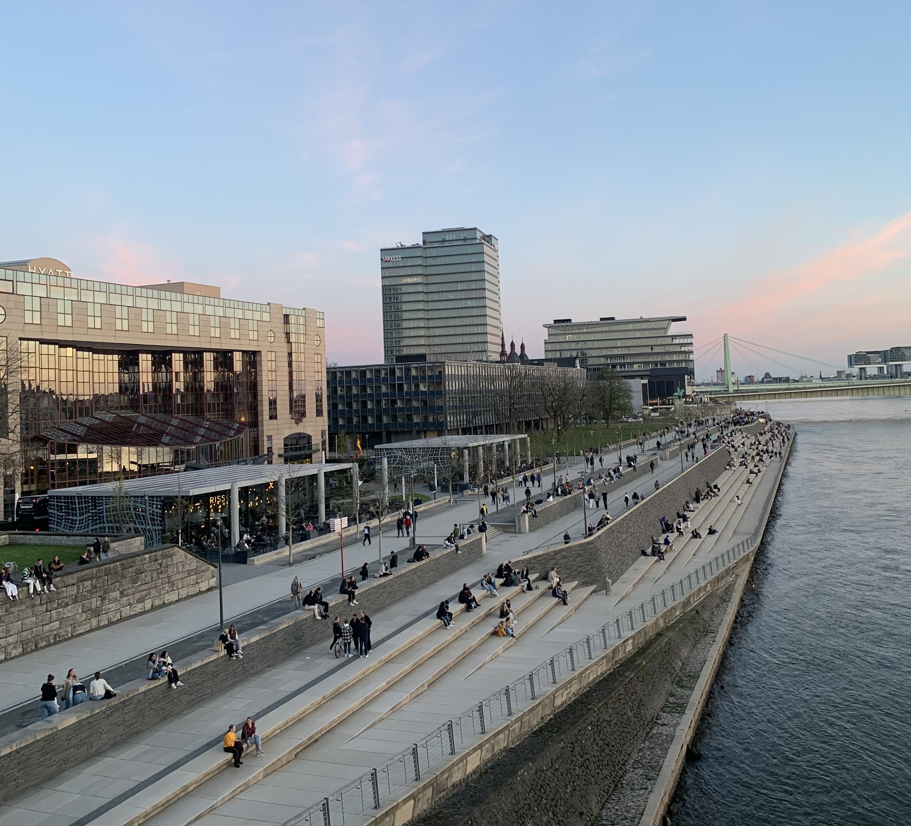
------------------------------------------------------------------------- Fact about milin #16: Em thích những quán cà phê low key. Em siu ghét những quán cà phê bật đèn trắng (như Percent) và chỉ có thể đi được mấy quán cà phê đèn vàng, càng tối càng tốt (nhớ Barxiu 🥹). |
|
Letter #25
Anh nho mui toc cua em, nho hoi am cua em, nho cai cach ma em lam cho anh cam thay moi van de tren Trai Dat nay deu tro nen nho be truoc vong tay cua em vay.
Anh nho nha cua anh.. 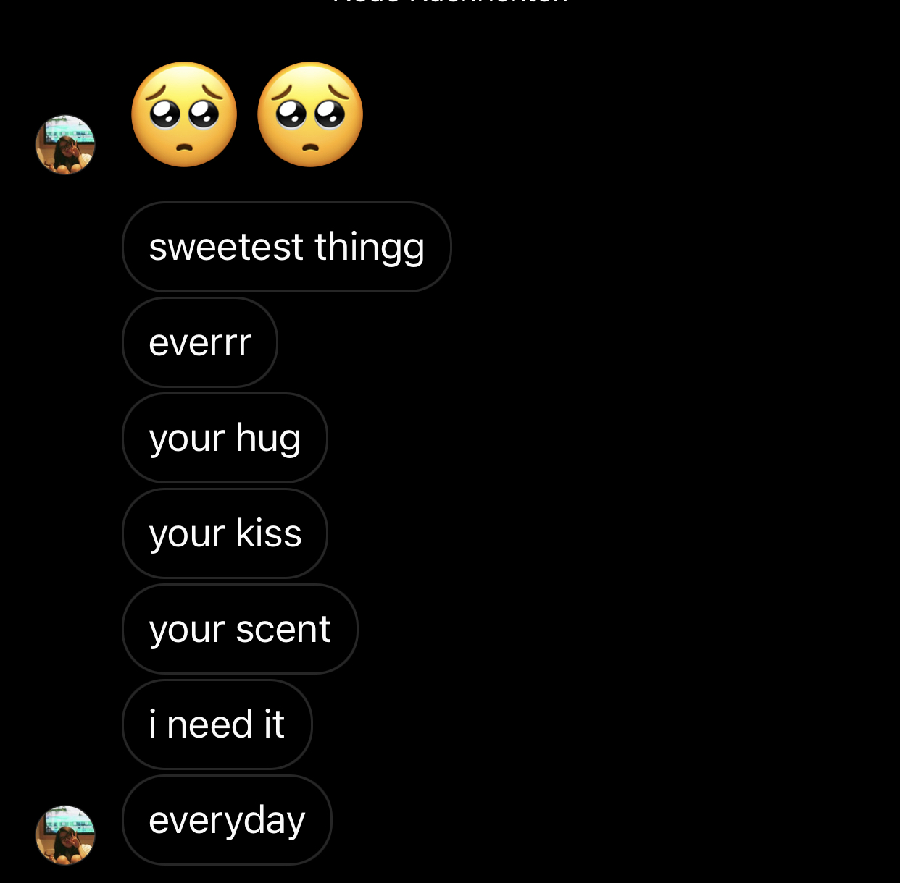 ------------------------------------------------------------------------- Fact about milin #17: Em ghét rửa chén và chà nhà vệ sinh. Nếu sau này tụi mình về chung nhà, anh sẽ đảm bảo nhà vệ sinh luôn sạch sẽ và chén bát luôn được cất gọn gàng. |
Letter #26
Anh lúc không mặc zì đã đủ quyến gũ em chưa 😼😌.
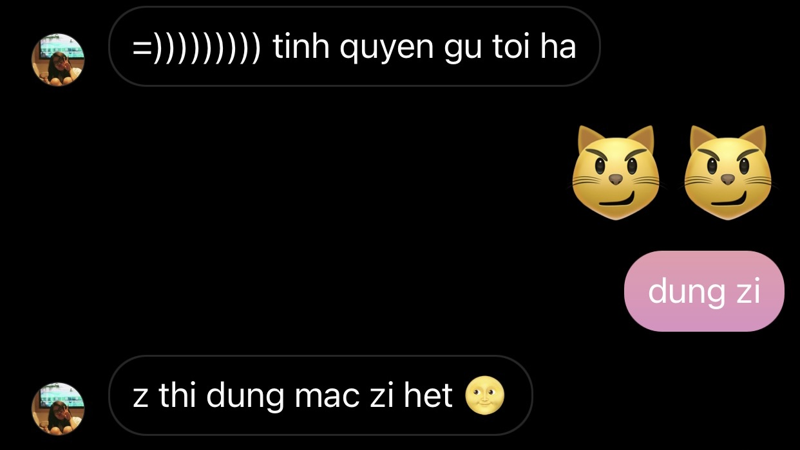
------------------------------------------------------------------------- Fact about milin #18: Em thích đồ chơi. Hồi nhỏ em không được ba mẹ mua cho đồ chơi, toàn chơi đồ chơi của con trai nên lớn lên bị muốn được mua đồ chơi cho. Cũng vì hay chơi đồ chơi của con trai nên hồi nhỏ tính em rất là mạnh mẽ luôn. |
Empty mailbox
Hôm nay người giao thư đang ở Hà Lan rùi, z nên là sẽ hong có thư cho ngày
hôm nay. Bù lại thì vẫn có fact about milin đó.
Chúc em bé của anh thứ tư zui zẻ. ------------------------------------------------------------------------- Fact about milin #19: Có một lần em chạy xe ngang qua phòng hiệu trưởng của trường nhma ông bà gánh còng lưng nên không bị hiệu trưởng thấy, xong bị chú bảo vệ ới lên là em kia làm zì z. Chứ hiệu trưởng mà thấy là bây giờ mẹ em từ mặt em rùi. |
Letter #27
Tính ga trip đi Hà Lan lần này là để chứng minh rằng anh vẫn có thể sống
vui vẻ ngay cả khi không có em ở bên cạnh nhma sao càng đi càng ước zì
có em ở đây chung zới anh zị. Tất nhin là đi 1m cũng zui, nhma anh cứ
suy nghĩ là nếu dắt được em theo thì nó sẽ vui hơn rất nhìu đók. I wanna share
every moment with you and only you.
Mà tính ra trip này cũng có em đi cùng với anh rồi mà. Everytime I see sth interesting you always popped up in my head. ------------------------------------------------------------------------- Fact about milin #20: Em thich ăn mì gói, nhưng mà không phải tại vì nó tiện mà do nó ngon. |
Letter #28
The trip to Amsterdam has made me realize one thing: That life itself is so beautiful
and worth-living, but life with you would easily be 1 billion times more beatiful and enjoyable.
I think the distance we are having now really have a meaning. It makes me focus on myself more and live independently. But on the other side, I have this opportunity to travel the world alone and I know exactly which place I will want to take you to in the future. 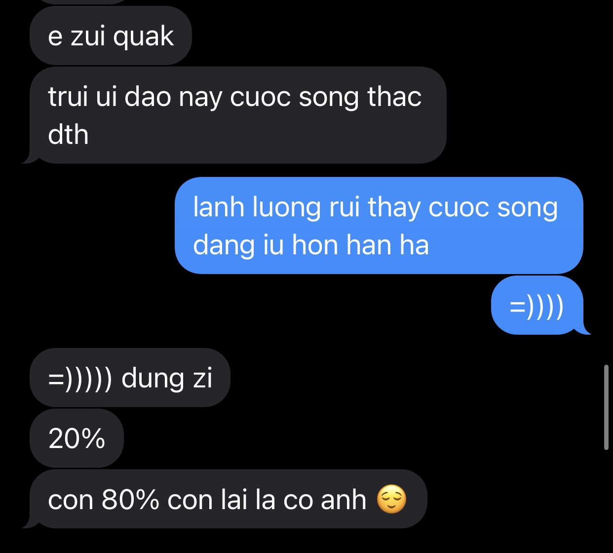 ------------------------------------------------------------------------- Fact about milin #21: Em là con của cô tổ trưởng văn trường top thành phố, viết luận được tới 9/10 lận nhma là viết bằng tiếng Anh, còn điểm thi Văn THPT của em được có 5 điểm thou. |
Letter #29
Hôm nay có nhìu chuyện muốn kể em nhưng mà tụi mình hong call được nên anh sẽ kể ở đây zị. Cũng hong muốn đợi
tới chủ nhật sợ tới lúc đó quên hết mất tiêu chuyện để kể rùi.
"Biếc gì hong, Hà Lan đẹp vãi lun. I think I have fallen in love with Netherland rùi. Anh nhận ga là không phải anh không hợp với châu Âu, mà là tại zì anh đi sai nước thui. Lúc qua Hà Lan anh thích vãi lun, cảm giác như đây là nơi mình có thể thuộc về zị. Cho nên là sau chuyến đi lần này anh lại càng k hối hận quyết định rời khỏi nước Đức của mình xíu nào hết. Anh thật sự nghĩ là tại vì anh không hợp với nước Đức đó, chứ qua Hà Lan anh thấy nó vui vãiii, chưa bao giờ có cảm giác là anh sẽ sống vui vẻ ở Đức được hết. Xong hqua anh có nói chuyện zới bạn đồng nghiệp thì nó cũng nói là nó ghét nước Đức lắm rồi, muốn ra nước ngoài sống như anh zị. Anh cảm giác là nếu như anh không qua Úc chơi với em thì chắc chắn anh sẽ đi Hà Lan đó. À, mọi người ở Amsterdam giàu vãiiii, đi ra ngoài đường thấy ai cũng đeo Airpods max hết, cách 10 người chắc sẽ có 1 người đeo AP Max đó, sony XM5 chắc là nghèo rùi 🥲 ( 1 bữa ăng tối 2 người đã hết 70 eur rồi thì cái tai nghe 500 eur có là gì đâu). Với lại ở Hà Lan ai cũng chạy xe đạp hết, thíc vãii, nhìn nó lãng mạn kk. Sống ở Hà Lan anh có thể băng qua đường theo phong cách Đông Lào, nhưng mà thay vì né xe máy như ở Việt Nam thì giờ sẽ là né xe đạp, cũng zui đók. Hôm qua anh đi làm bị bắt nạt 😾. Bà quản lí ca anh thấy anh rảnh quá cho nên là bã sai vặt anh làm việc của bã. Bth là sẽ có cái task là lấy lại đồ mà khách bỏ lại xong xếp lại vô siêu thị á, thì hôm đó bã phải làm cái đó, nhma bã thấy anh rảnh quá nên bã mới bắt anh làm, mà bã bắt anh với với cái thái độ như kiểu anh phải làm cái đó z. Đồng nghiệp của anh thấy anh bị đối xử như z mà bất bình giùm lun mà. Xong cái lúc nó nói với bà quản lí ca đó là nó muốn chấm dứt hợp đồng thì bã mới hỏi lại nó là "Have we done sth wrong that you want to end the contract with us?" Chắc bã cũng thấy là bã đối xử với nvien như cứt zị xong giờ bị giật mình. Xong bã còn nói xấu anh với đồng nghiệp của anh nữa, bã k biết nó cũng là bạn anh hã, ngốk vãi lun. Nhưng mà cũng sau hôm đó anh mới thấy là quyết định từ bỏ nước Đức của mình đúng đắn vãii. People here in Germany is like shit, quote từ bạn đồng nghiệp người Đức của anh." Anh biếc là lá thư hôm nay nó bị xàm, nhma anh muốn kể chiện cho em nghe. Nếu em đọc tới đây rùi thì me happi now. ------------------------------------------------------------------------- Fact about milin #22: Hồi nhỏ em hay được dẫn đi Kid city chơi lính cứu hỏa, trồng cây... . Có một lần em chơi trò gì ák (hình như là lính cứu hỏa) xong rùi để quên hết cả "gia tài" trong cái áo lun. Thằng nào mà mặc được cái áo đó chắc nó phải tích đức 9 đời ák. Từ đó em không còn tha thiết gì quay lại chỗ đó nữa. Lần đầu tiên em hiểu cảm giác tán gia bại sản là ntn 🥹. |
Song that reminds me about you #4
"This was the very first page
Not where the story line ends" - Enchanted, Taylor Swift (Click để tới link nhạc, nhớ đọc lời bài hát nữa.) ------------------------------------------------------------------------- Nguyên bài hát này làm anh nhớ tới lần đầu tiên tụi mình gặp nhau ở Phú Quốc đó. Lúc này hai đứa chưa biết gì về nhau hết, nhưng mà từ lần đầu tiên gặp nhau it already felt different. Anh nghĩ rằng ông trời vốn chỉ ban duyên cho tụi mình trong 2 tuần cuối cùng anh ở Việt Nam thôi, nó sẽ là một đoạn tình cảm dang dở, giây phút anh quay trở lại Đức tụi mình sẽ trở thành 2 người xa lạ từng có kỉ niệm với nhau. Nhưng mà biết sao được, tới trời cũng hok tính được màk, trong 2 tuần đó anh đã lỡ say đắm cái cảm giác bình yên khi được ở bên em rồi, so I refuse to believe that this is where our story line ends. I want it to be the very first page of our story, so I ignore God's intention, turn to the next page and continue writing our story, even though at the first place there was no second page for our story. Mắc cười một chỗ là lúc này hay đứa đều có bồ nhưng mà anh đã thật sự mong là em chưa có đó. "Please don't have somebody waiting on you" đúng như lời bài hát lun. ------------------------------------------------------------------------- Fact about milin #23: Em thích trà sữa Malay ở Ministop. |
|
Letter #30
To meet you is God's intention, to fall in love with you is mine.

------------------------------------------------------------------------- Fact about milin #24: Em hay bị lạnh chân. Nếu như chân được giữ ấm rồi thì em sẽ chuyển sang lạnh tay. |
Letter #31
This is us.
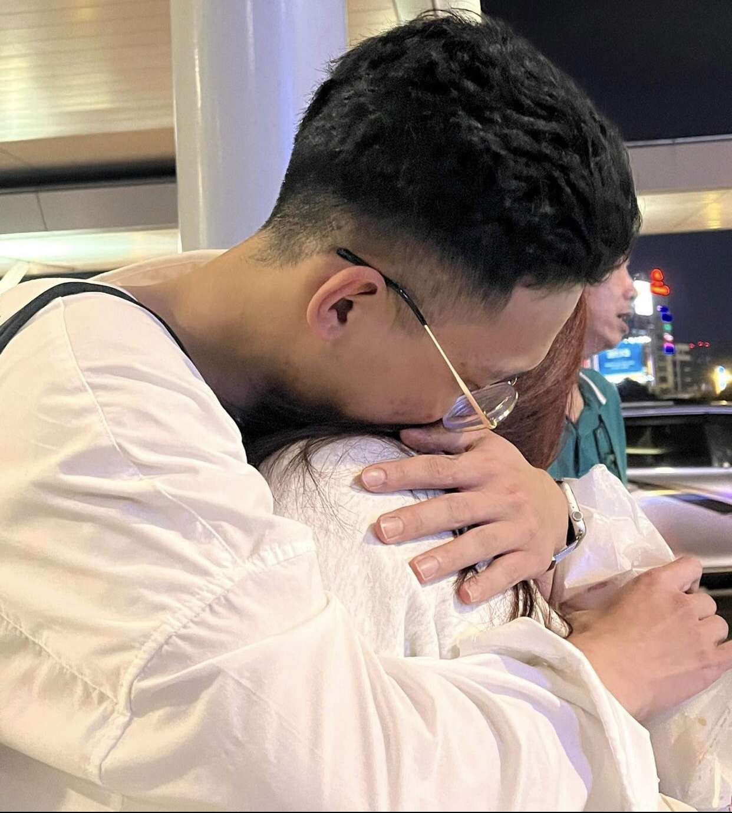
------------------------------------------------------------------------- Fact about milin #25: Em khi bị bịn: phở >>>>> cháo |
Letter #32
À, anh đã nhớ được lí do tại sao anh lại không chọn đặt vé trễ hơn ngày 7 rồi.
Tại vì anh muốn được gặp em sớm, không muốn gặp em trễ hơn một ngày nào hết.
Anh thà được gặp em sớm hơn một ngày còn hơn là ở Việt Nam chơi thêm 1 ngày đó.
Lúc đầu anh còn tính qua đầu tháng 7 luôn mà,
mà tại vì hợp đồng bắt đầu từ ngày 7 cho nên bất đắc dĩ anh mới phải qua ngày 7
thui.
Hôm qua lúc ngồi đặt vé anh bị háo hức đó, nhưng mà tự nhiên anh suy nghĩ là có khi em sẽ không háo hức hay mong chờ anh lắm, xong rùi thui cũng hong còn muốn qua sớm nữa. Em của bây giờ làm anh có cảm giác giống như những ngày cuối cùng trước khi anh về Việt Nam vậy á. Em bị sợ việc tụi mình gặp lại nhau đúng hong. ------------------------------------------------------------------------- Fact about milin #26: Em có 4 cái nốt ruồi, nhưng mà 2 cái bị ẩn ở chỗ khó thấy. |
Letter #33
It's unfair when you have the option to love me or not,
while I can only choose between loving you and loving you even more 😾.
------------------------------------------------------------------------- Fact about milin #27 (Anh nghĩ là em sẽ không thích cái fact này cho lắm): Em đã từng niềng răng và mổ mắt, nhưng mà tới bây giờ em vẫn còn hơi lé. (Nói gì thì nói mấy lúc em lé nhìn cute quãii, nhìn chỉ muốn mi một cái thou 😾.) |
Letter #34
Anh có thể nằm trong hội người mù Việt Nam, cận 8 độ nên cũng k tự nhận mắt mình sáng,
nhma iu em là quyết định sáng suốt nhất của anh đó.
------------------------------------------------------------------------- Fact about milin #28: Em đã từng làm mất cái máy ảnh và tài khoản âm 15 trịu, nhma somehow em vẫn vượt qua được cú sốc tài chính đó. |
Letter #35
Có thể anh dịu dàng với mọi người xung quanh, nhưng mà anh chắc chắn là sự dịu dàng anh dùng
để đối đãi với em là một sự dịu dàng chưa một ai khác cảm nhận được hết. Đây là sự đối đãi
đặc biệt mà anh muốn dành riêng cho em thôi.
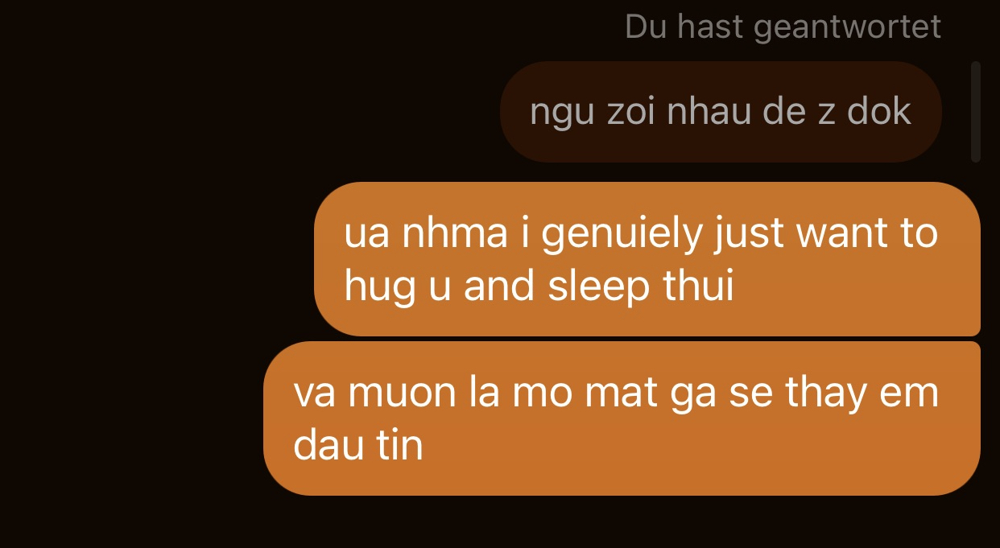
------------------------------------------------------------------------- Fact about milin #29: Em không thích haidilao. Em thích manwah. Nhưng mà vô manwah em chỉ toàn nghía tới quầy đồ ngọt thôi. |
Letter #36
This month has not been easy for me at all..
(Hôm nay cho anh được phép tiêu cực một xíu nha.) Dạo này anh cảm thấy mối quan hệ của tụi mình hong được suôn sẻ cho lắm. Mỗi ngày trôi qua anh lại cảm giác như mình đang xa em hơn một xíu, và tới bây giờ thì anh cảm giác mình đã mất kết nối với em thật sự rồi. Anh không còn đoán được là em đang nghĩ gì hết, cũng k tự tin là mình còn hiểu em như trước. Có những ngày anh không còn cảm nhận được em đang tồn tại trong cuộc sống của anh nữa. Nè, nếu một ngày anh biến mất khỏi cuộc sống của em, thì sao? Dạo này anh tự hỏi bản thân của mình câu hỏi đó, tại vì dạo này anh cảm giác được là có anh cũng hong còn làm một ngày của em vui vẻ hơn như trước được nữa.. Nếu một ngày anh không còn xuất hiện trong cuốc sống của em nữa, liệu nó có lấy đi niềm vui nào đó của em hong, hay là cuộc sống của em vẫn sẽ vận hành như trước, như thể anh chưa từng biến mất vậy. Liệu rằng em có nhớ những câu chúc ngủ ngon, chào buổi sáng của anh, nhớ những lá thư mà anh viết mỗi ngày, nhớ giọng anh mỗi lần call hong? Liệu em có mong chờ tới một ngày được nghe anh đọc truyện cổ tích cho trước khi đi ngủ hong? Anh thật sự muốn biết đó. Anh bước vào cuộc sống của em với một mong muốn duy nhất là được làm em vui mỗi ngày thôi, mà giờ tới việc đó anh còn không làm được thì anh hong biết mình còn lí do gì để ở lại cả... Dạo này anh cảm thấy bất lực lắm, tại vì với cái khoảng cách này anh không còn thể nào tạo nên những điều tích cực trong cuộc sống của em được nữa hết.. Anh đã thử hết mọi thứ anh có thể thử rồi, nhưng mà có vẻ nó cũng hong thay đổi được gì. Anh không còn là người đầu tiên được nghe những câu chuyện của em, không phải là người đầu tiên em nghĩ tới mỗi buổi sáng, không còn là người em nhớ tới những lúc vu vơ, không còn là người nhắn tin yêu thích của em, cũng không còn là sự ưu tiên của em nữa.. Then who am I to stay in your world? Nè, nói cho anh biết đi, nếu ngày mai anh biến mất khỏi cuộc sống của em, liệu điều đó có làm em buồn không? I need you to be brutally honest with me. Nếu câu trả lời của em là không, thì anh nghĩ mình đã hoàn thành sứ mệnh của mình trong cuộc đời của em rồi. Tới lúc đó anh sẽ tự cho phép bản thân mình buông tay ra và nghỉ ngơi thui. I promise I won't outstay your welcome. Còn nếu câu trả lời của em là có, thì hãy nói cho anh biết đi, tại vì anh bây giờ đang không cảm nhận được điều đó xíu nào hết (If so I wish I could just hug u rn, I swear it will make me feel safe immediately). ------------------------------------------------------------------------- Cuối cùng thì tất cả những ngày trong tháng 4 cũng được fill bằng một màu hồng sến súa rồi nè, cảm giác thời gian qua cũng mau đó. Tới bây giờ vẫn chưa miss ngày nào hết, người giao thư này vẫn đảm bảo thư được giao tới đúng người mỗi ngày kkk. Hi vọng những ngày trong tháng 5 và tháng 6 cũng được fill lẹ lẹ giống z, để anh còn được gặp lại em nữa. |
MAY
| MON | TUE | WED | THU | FRI | SAT | SUN |
|---|---|---|---|---|---|---|
|
Letter #37
Dù thế nào đi chăng nữa, anh vẫn sẽ chờ đợi em. Trái tim của anh vốn dĩ chỉ có mình em thôi, em kêu anh tìm hiểu
ai khác làm sao mà anh làm đuiocjw cơp chứ. Anh biết là bây giờ tụi mình không còn ràng buôc zì với nhau nữa,
nhưng mà dù thế nào đi chăng nữa anh vẫn sẽ yêu em và chờ dợi em thôi. No matter how long it takes, it will be here, and waiting for you.
|
Letter #38
Just to let you know that letting you go doesn't mean I'm giving up on you.
I will still continue to love you and nothing can change that!
(Sometimes I wish I could but I simply cannot stop myself from stubbornly loving you).
I will stand here, waiting for you to reorganize your life and invite me back to your life again. ------------------------------------------------------------------------- Fact about milin #30: Em không phải là con người của thể thao. Em cũng không thích hoa. Em không có tay trồng cây. Em cũng không dậy sớm. Mấy điểm này em không giống ba mẹ xíu nào hết. |
Letter #39
"I have yet to make you happy, how can I accept defeat?"
- The Chaos After You, Eric Chou But it seems like in this battle against the distance, I've lost. ------------------------------------------------------------------------- Fact about milin #31: Hồi nhỏ cuối tuần em hay được ba mẹ dẫn đi nhà sách chơi. Em với anh 2 sẽ ngồi cả tiếng trong đó để đọc sách. |
||||
JUNE
| MON | TUE | WED | THU | FRI | SAT | SUN |
|---|---|---|---|---|---|---|